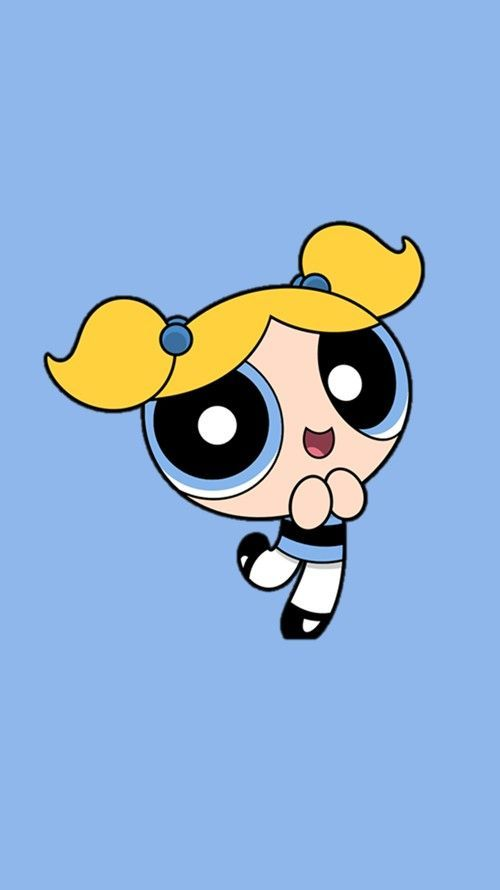

Ella es la más extrovertida e inteligente de las 3 hermanas, Bombón es la líder natural de las Chicas Superpoderosas. Ella es de pensamiento rápido, lógica, analítica y tiene un fuerte sentido de la justicia. Es quien inventa nuevas maniobras en equipo y dirige a las Chicas en la batalla.
Ella tiende a ser demasiado emocional. Puede ser algo ingenua y sensible, lo que hace que a veces sea considerada como el eslabón más débil del grupo, tanto por amigos como por enemigos. Sin embargo, puede volverse muy independiente y agresiva, sin mencionar cuando esta extremadamente enojada. De todas las Chicas Superpoderosas, ella es la más temida por Mojo Jojo, después de haberlo derrotado en un ataque de ira.

Bellota es una chica ruda amante de la diversión. Con este rasgo, podría haber representado su naturaleza agresiva y violenta. Ella siempre se negará a admitir la derrota, siempre encuentra la solución cada vez que las chicas están en una batalla perdida.